Portfolio Projects
A full breakdown of the channels and organizations I've edited for — audience, role, and the complete body of work behind each one.
La Verdad Broadcasting Society
Lead Video Editor producing promotional reels, broadcast-style news packages, and event coverage — transforming raw footage into polished broadcast content through structured storytelling, dynamic pacing, and audience-focused editing. Several productions exceeded the page's own follower base, with the highest-performing video reaching 256% of it.
Role
Working editor across four consecutive school years — turning raw event footage into broadcast-ready news packages and promotional reels for a 9K-follower page.
Responsibilities
La Verdad Intramurals #2
Broadcast-style news package covering the Intramurals — impactful moments and fast-paced editing to keep viewers engaged.
La Verdad Intramurals #1
Broadcast news package documenting Intramurals highlights — student athletes and competition energy.
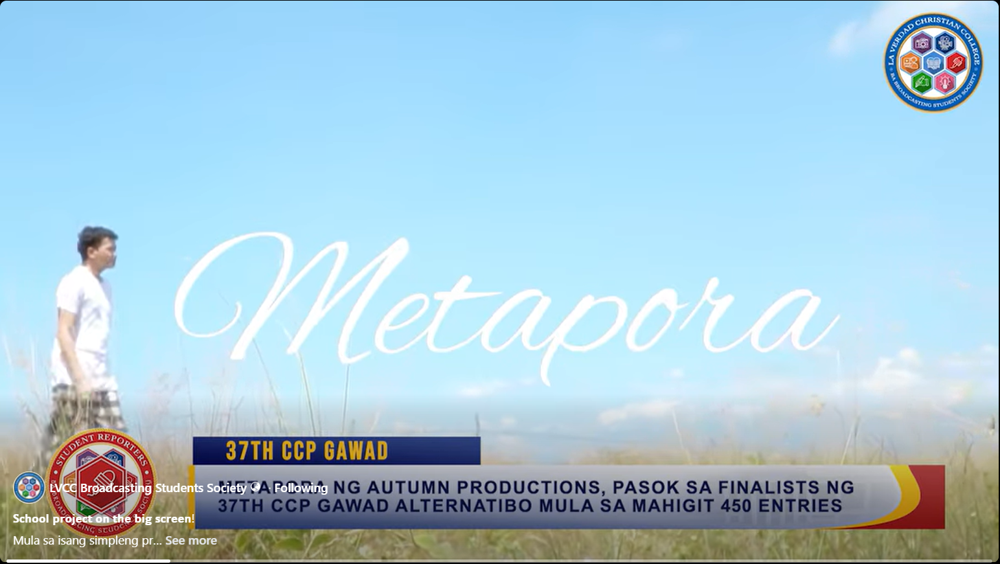
METAPORA — Gawad Alternatibo
Cinematic promotional reel documenting the journey to the 36th Gawad Alternatibo Film Festival.
La Verdad Intramurals #3
Comprehensive broadcast package covering the 2026 Intramurals — student-athletes and competitive moments.
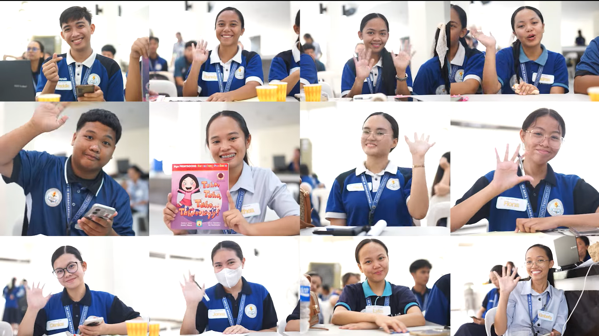
Writers Workshop
Promotional reel encouraging student participation in a campus-wide creative writing workshop.
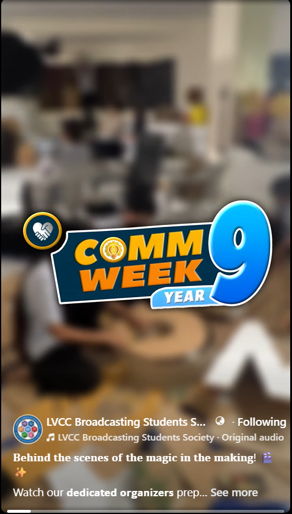
CommWeek Year 9 Preparations
Behind-the-scenes promotional reel showcasing prep for the annual Broadcasting celebration.
UNTV — Tulong Muna Bago Balita
Fast-turnaround news reels covering developing weather situations, rescue operations, and community impacts across the Philippines — balancing speed, accuracy, and storytelling under tight deadlines while maintaining the credibility and urgency expected from a news organization.
Role
Contributing editor for time-sensitive national broadcast segments — turning field footage into fast, credible news content for a 106K-follower audience.
Responsibilities
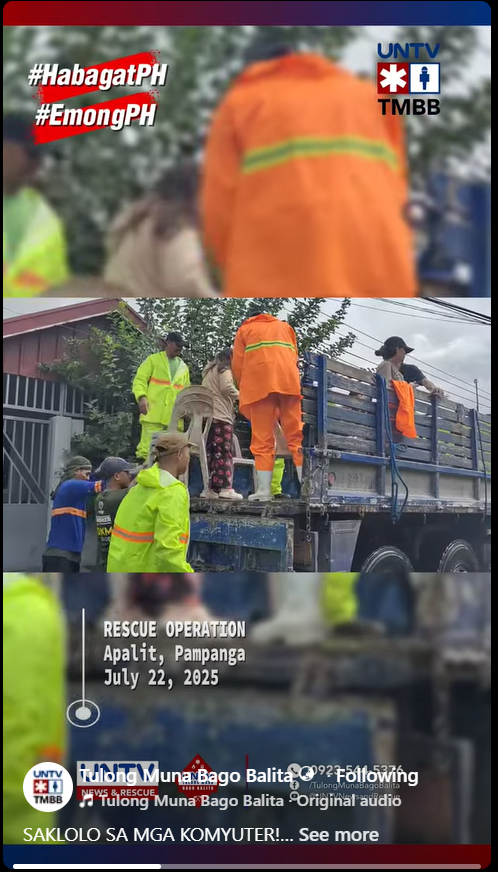
Typhoon Emong — Rescue Operation
Fast-paced rescue operation reel highlighting UNTV volunteer efforts during Typhoon Emong.
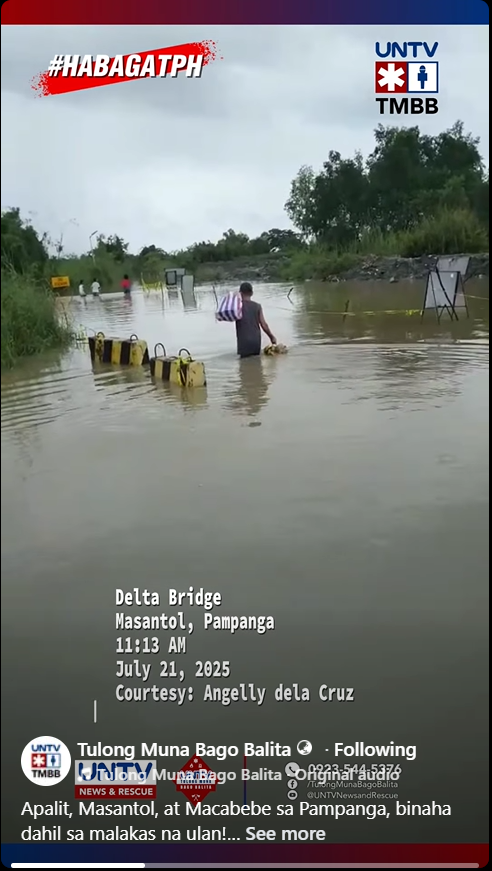
Hanging Habagat Status Report #4
Compilation-based weather reel on the continued effects of the Southwest Monsoon.
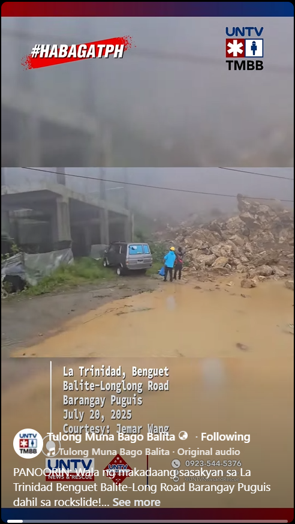
Hanging Habagat Status Report #5
Weather update reel on the Southwest Monsoon's effects across communities.
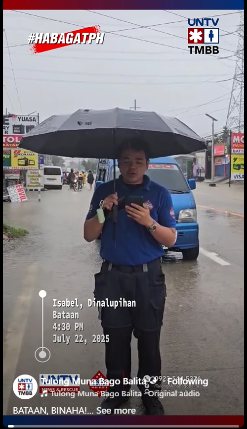
Hanging Habagat Status Report #3
Timely coverage of the Southwest Monsoon's impact on transportation and daily life.
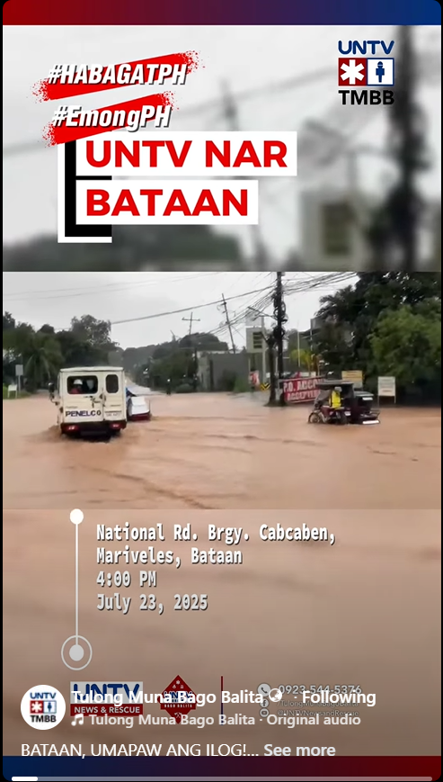
Typhoon Emong — News Item
News item covering Typhoon Emong's developments and ongoing rescue operations.
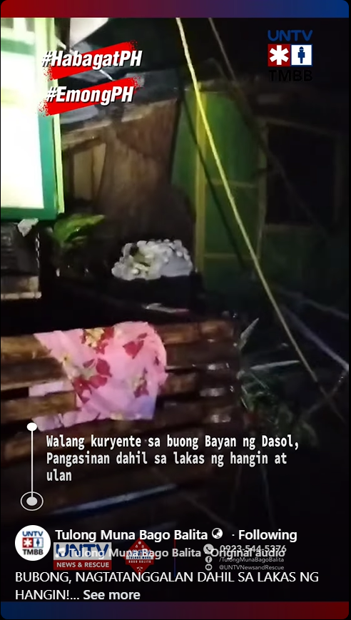
Typhoon Emong — Status Report
Compilation reel on Typhoon Emong's impact across affected communities.
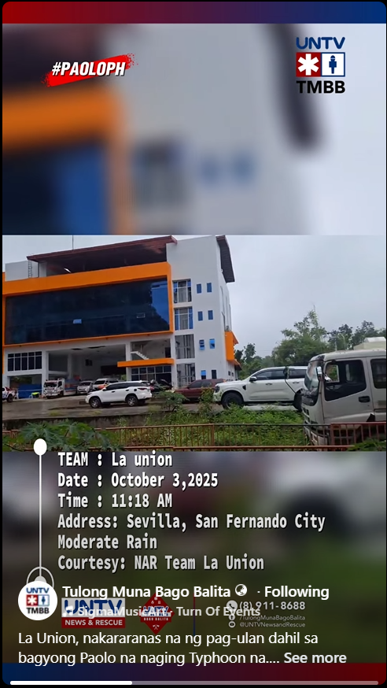
Typhoon Paolo — Status Report
Weather coverage reel documenting the effects of Typhoon Paolo and community response.
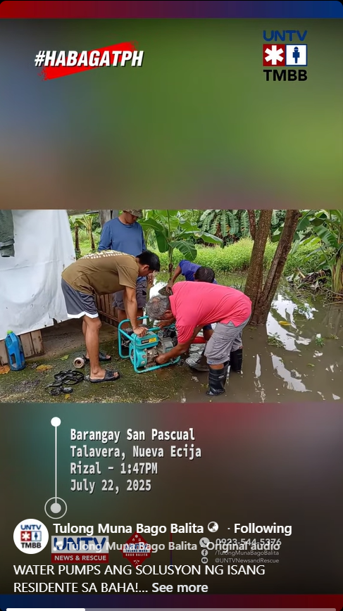
Hanging Habagat Status Report #1
Compilation reel highlighting flooding and heavy rainfall from the Southwest Monsoon.
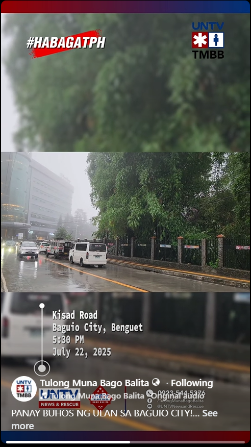
Hanging Habagat Status Report #2
Weather update reel on the continued Southwest Monsoon effects across affected areas.
The X Trajectory
Part-time editor for long-form YouTube content on technology, business, and emerging industries — particularly Tesla and AI. Transformed complex topics into engaging video narratives through retention-focused editing, pacing, and information structuring for a small but growing channel.
Role
Retention-focused editor for research-heavy, long-form videos — helping a small channel repeatedly outperform its own subscriber base.
Responsibilities

SpaceX Is Quietly Building an AI Monopoly
Long-form exploration of SpaceX's role in AI and its potential impact on the tech industry.

What Optimus Is Actually Worth to Tesla's Stock
Analysis-driven video on Tesla's Optimus robot and its potential business value.

Why Elon Wants Tesla Stock Low in 2026
Business-focused video analyzing Tesla's stock strategy and market positioning.

Tesla's Robotaxi Rollout Is Hiding in Plain Sight
Technology-focused video exploring Tesla's Robotaxi developments and future implications.
DSWD Pag-abot Program
Documentary-style features and educational videos focused on human-interest storytelling, public awareness, and communicating government services — balancing emotional storytelling, public education, and clear communication to present the Pag-abot Program's mission to a wider audience.
Role
Editor for documentary and educational content — turning beneficiary stories and program information into content that consistently reached thousands.
Responsibilities
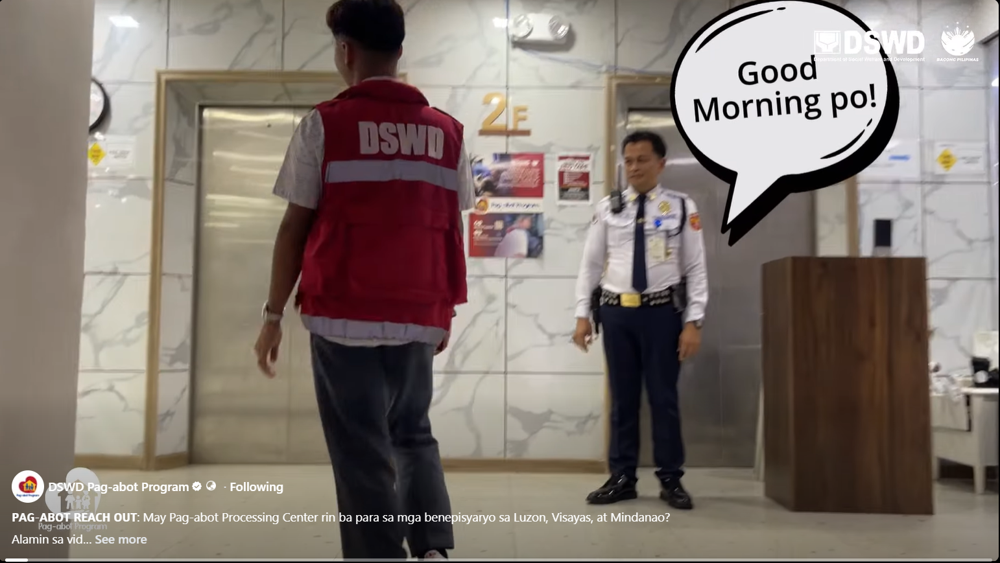
Are There More Pag-abot Centers?
Educational video on the program's nationwide accessibility and reach.
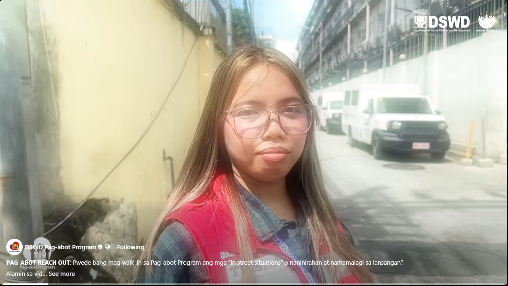
Can We Walk In to the Pag-abot Program?
Process-guide video simplifying how beneficiaries can access the program.
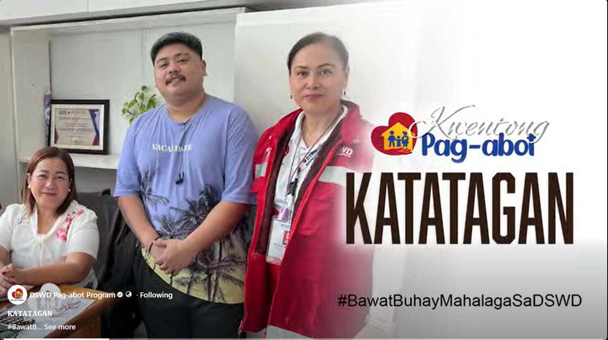
Kwentong Pag-abot #1
Human-interest documentary on a beneficiary's journey from homelessness to reintegration.
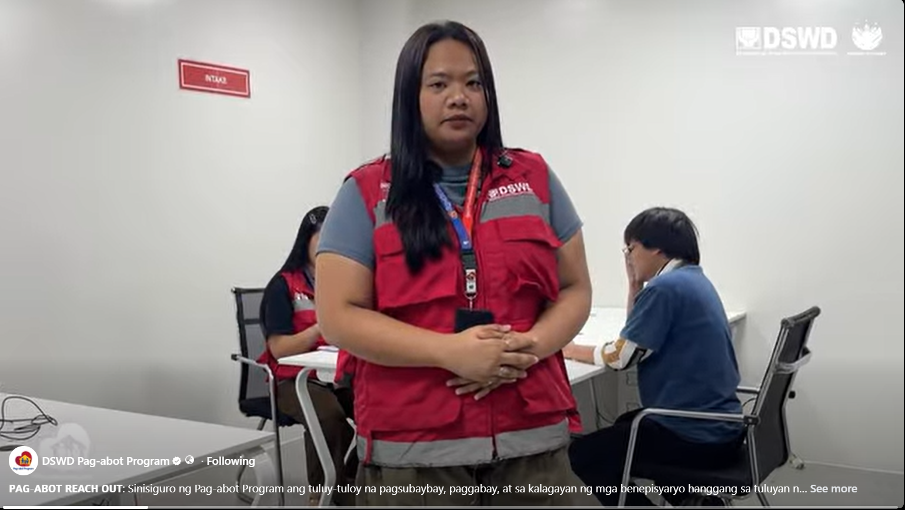
What Happens If There Is No Receiving Family?
Educational video explaining intervention for beneficiaries without family support.
Golden Hour Cafe
Short-form editor for a small local café — cinematic ambiance reels, product-forward food and drink content, and comedy-driven marketing skits, each turned around within a day. Every reel has landed multiples of the page's own follower count, with the strongest piece reaching over 25x its audience.
Role
Short-form editor turning same-day footage into cinematic, product-forward, and comedic content for a 628-follower local café page.
Responsibilities
Golden Hour #1
Features the ambiance of the place, showcasing the location and giving heart to the environment of the shop.
Golden Hour #2
Features the food and drinks of the coffee shop, making the menu the main character.
Golden Hour #3
A funny skit involving the shop, showcasing comedy in marketing.